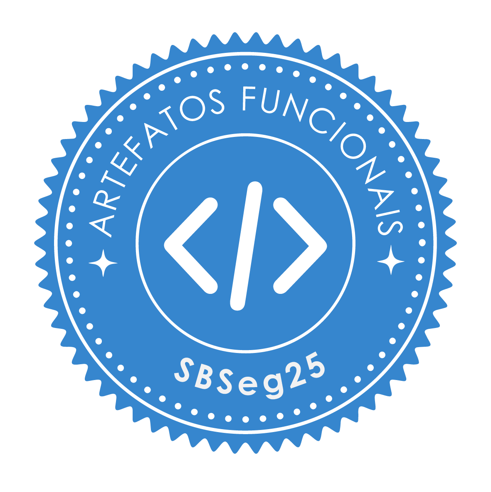
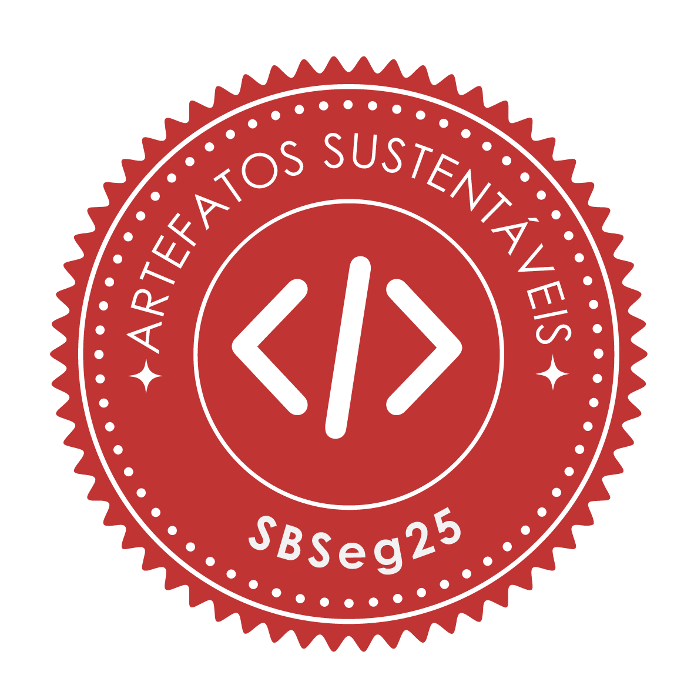
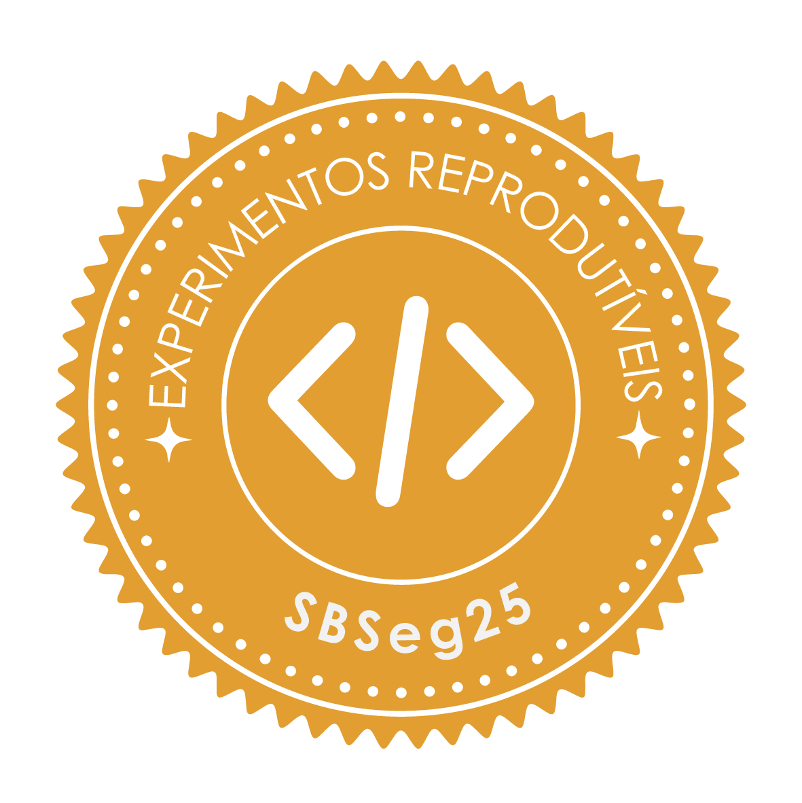

Avaliação de Artefato do SBSeg'25
O SBSeg vai permitir que autores submetam artefatos relacionados ao artigo submetido, podendo tais artefatos serem software, dados, documentação complementar, resultados brutos, provas de conceito, modelos, avaliações detalhadas, benchmarks etc.
Este recurso é essencial para a completa compreensão de um artigo científico, que vai além do documento em si. A qualidade de um artefato tende a ser tão importante quanto o próprio artigo científico. Normalmente, as conferências no Brasil não oferecem meios formais para submeter e avaliar nada além do próprio artigo. Rompendo com essa tradição, o SBSeg realizará a coleta de artefatos, sendo estes para a Trilha Principal e Salão de Ferramentas.
O processo de submissão de artefatos vai ocorrer após a notificação dos aceites dos trabalhos submetidos e os autores deverão descrever os selos de qualidade que devem ser considerados para o artefato, bem como uma documentação detalhada seguindo as regras de submissão.
O processo de avaliação de artefatos vai ter como base o processo de avaliação realizado por conferências de renome como USENIX, CoNEXT, SIGCOMM e EuroSys e será realizado pelo Comitê Técnico de Artefatos (CTA). Para os autores que submeterão artefatos, é fundamental que façam a leitura das descrições dos selos disponíveis e das instruções sobre o que é esperado de um artefato.
Chamada para Artefatos
Um artefato pode ser um software, dados, documentação complementar, resultados brutos, provas de conceito, modelos, avaliações detalhadas, benchmarks etc.
Quatro selos de qualidade podem ser considerados para um artefato:
- Artefatos Disponíveis (SeloD);
- Artefatos Funcionais (SeloF);
- Artefatos Sustentáveis (SeloS); e
- Experimentos Reprodutíveis (SeloR).
Antes de enviar seu artefato, verifique os requisitos para a obtenção de cada selo. Caso tenha alguma dúvida, entre em contato.
Instruções de submissão
Quatro selos de qualidade podem ser considerados para um artefato. Após a notificação de aceite do artigo no SBSeg'25, os autores da Tripla Principal e do WTICG podem opcionalmente submeter o(s) artefato(s) relacionado(s), já os autores do Salão de Ferramentas são obrigados a fazer a submissão do artefato.
Os autores devem fazer o registro do artefato na plataforma hotcrp. Este registro requer algumas informações como contato dos autores, um link para o artefato e opcionalmente um apêndice. Vale lembrar que o processo de revisão do CTA é independente da revisão do artigo no JEMS e as submissões são single-blind.
Importante ressaltar que para um artefato o comitê de revisão espera que:
- Os requisitos mínimos do README estejam presentes no repositório;
- Informações sobre recursos específicos estejam presentes no apêndice.
- O artefato atenda os critérios dos selos solicitados;
- Os autores respondam as perguntas postadas pelos revisores na plataforma, como enviem a carta de rebuttal dentro do prazo.
Todo o processo de revisão do artefato será realizado pela plataforma hotcrp. Os autores com artefatos registrados para o processo de revisão serão notificados sobre o acesso à plataforma e devem observar por emails enviados pela plataforma com dúvidas do comitê de revisão. Todo o processo de comunicação dos revisores de artefatos com os autores é realizado pelo hotcrp.
Requisitos mínimo README.md (Obrigatório)
Para facilitar o processo de avaliação dos artefatos, foi criado um modelo de README.md (Obrigatório) com todos os campos mínimos esperados para um artefato.
# Título projeto
Resumo descrevendo o objetivo do artefato, com o respectivo título e resumo do artigo.
# Estrutura do readme.md
Apresenta a estrutura do readme.md, descrevendo como o repositório está organizado.
# Selos Considerados
Os autores devem descrever quais selos devem ser considerados no processo de avaliação. Como por exemplo: ``Os selos considerados são: Disponíveis e Funcionais.''
# Informações básicas
Esta seção deve apresentar informações básicas de todos os componentes necessários para a execução e replicação dos experimentos.
Descrevendo todo o ambiente de execução, com requisitos de hardware e software.
# Dependências
Informações relacionadas a benchmarks utilizados e dependências para a execução devem ser descritas nesta seção.
Busque deixar o mais claro possível, apresentando informações como versões de dependências e processos para acessar recursos de terceiros caso necessário.
# Preocupações com segurança
Caso a execução do artefato ofereça algum tipo de risco para os avaliadores. Este risco deve ser descrito e o processo adequado para garantir a segurança dos revisores deve ser apresentado.
# Instalação
O processo de baixar e instalar a aplicação deve ser descrito nesta seção. Ao final deste processo já é esperado que a aplicação/benchmark/ferramenta consiga ser executada.
# Teste mínimo
Esta seção deve apresentar um passo a passo para a execução de um teste mínimo.
Um teste mínimo de execução permite que os revisores consigam observar algumas funcionalidades do artefato.
Este teste é útil para a identificação de problemas durante o processo de instalação.
# Experimentos
Esta seção deve descrever um passo a passo para a execução e obtenção dos resultados do artigo. Permitindo que os revisores consigam alcançar as reivindicações apresentadas no artigo.
Cada reivindicações deve ser apresentada em uma subseção, com detalhes de arquivos de configurações a serem alterados, comandos a serem executados, flags a serem utilizadas, tempo esperado de execução, expectativa de recursos a serem utilizados como 1GB RAM/Disk e resultado esperado.
Caso o processo para a reprodução de todos os experimentos não seja possível em tempo viável. Os autores devem escolher as principais reivindicações apresentadas no artigo e apresentar o respectivo processo para reprodução.
## Reivindicações #X
## Reivindicações #Y
# LICENSE
Apresente a licença.
É obrigatório que TODAS as Seções apresentadas no requisito mínimo README.md estejam presentes. Se você tiver qualquer dúvida, por favor, entre em contato conosco.
Note Antes de submeter o seu artefato, é interessante que os autores realizem a instalação e execução do seu artefato em um ambiente novo (máquina virtual) seguindo somente as instruções presente no README.md.
Recursos específicos ou restrições
Caso recursos adicionais sejam necessários (infraestrutura de nuvem, chaves SSH, etc.) para a avaliação do artefato, estas informações devem ser submetidas através de um apêndice. Neste os autores incluem informações adicionais (privadas, como chaves SSH para acessar o Google Cloud) para auxiliar os revisores do Comitê Técnico de Artefatos. O modelo LaTeX de apêndice está disponível em Exemplo-Apendice. Todos os campos devem ser apresentados no apêndice, além dos requisitos mínimos para o README.md que são obrigatórios.
O apêndice é um critério adicional no momento que recursos específicos acabam sendo necessários para a avaliação do artefato ou restrições de acesso existam.
Exemplos de Apêndices
| Evento | Apêndice | Artefato | Artigo |
|---|---|---|---|
| SBRC'25 | Apêndice link | Artefato link | Artigo link |
| SBSeg'23 | Apêndice link | Artefato link | Artigo link |
| USENIX'23 | Apêndice link | Artefato link | Artigo link |
| USENIX'23 | Apêndice link | Artefato link | Artigo link |
| USENIX'23 | Apêndice link | Artefato link | Artigo link |
Requisitos por selo
Para que o trabalho/artefato seja apto a receber o selo, os respectivos requisitos devem ser alcançados:
Artefatos Disponíveis (SeloD)
É esperado que o código e/ou dados estejam disponíveis em um repositório estável (como GitHub e GitLab). Neste repositório é esperado encontrar um README.md com os requisitos mínimos. O arquivo README.md do repositório pode ser o mesmo arquivo submetido para apreciação do CTA.
Artefatos Funcionais (SeloF)
É esperado que o código e/ou artefato possa ser executado e o revisor consiga observar algumas de suas funcionalidades. Para adquirir este artefato, é importante que informações adicionais estejam presentes no README.md do repositório, como
- lista de dependências;
- lista de versões das dependências/linguagens/ambiente;
- descrição do ambiente de execução;
- instruções de instalação e execução;
- um exemplo de execução mínima.
Artefatos Sustentáveis (SeloS)
É esperado que o código e/ou artefato esteja modularizado, organizado, inteligível e de fácil compreensão. Para obter o selo é interessante que:
- exista uma documentação mínima do código (descrevendo arquivos, funções,..);
- legibilidade mínima de código;
- permita que os avaliadores consigam identificar as principais reivindicações do artigo no artefato.
Experimentos Reprodutíveis (SeloR)
É esperado que o revisor consiga reproduzir as principais reivindicações apresentadas no artigo. Sugere-se a utilização de máquinas virtuais, containers ou scripts que facilitem e reduzam o tempo de criação do ambiente. Para obter este selo é esperado:
- instrução para executar as principais reivindicações (e.g., resultados dos principais gráficos/tabelas);
- descrição de um processo de como foram executados os experimentos para chegar até o resultado do artigo. Para atender esses requisitos sugere-se a inclusão de script(s) que automatizem ao máximo todo o processo de reprodução;
Processo de revisão
O processo de revisão de artefatos está dividido em duas etapas de revisão, como autor você deve ficar atento às perguntas levantadas pelos revisores na plataforma. Após o término da primeira etapa de revisão (sbseg25-r1), os autores devem submeter uma carta de rebuttal que visa esclarecer problemas encontrados pelos revisores e auxiliar no processo de revisão. Por fim, os revisores vão considerar as revisões da primeira fase e a carta de rebuttal para tomar uma decisão na segunda fase de avaliação (sbseg25-r2-decision).
Calendário de revisão para o ciclo de revisão do SBSeg'25:
- Prazo para Submissão de Artefatos
- Rodada 1 de Revisão (sbseg25-r1)
- Fase de Rebuttal
- Decisão do Revisor (sbseg25-r2-decision)
*As datas estão disponíveis no hotcrp.
Instruções para revisão
Seu objetivo como um revisor de artefato consiste em garantir que a qualidade do artefato corresponda com o conteúdo do artigo e os requisitos mínimos esperados para a obtenção de cada selo.
Note: Observe que o período de revisão é relativamente curto. Recomendamos iniciar suas revisões assim que receber sua tarefa, já que dois selos requerem a execução do artefato.
Passos para a Avaliação de um Artefato
O processo de revisão pode ser realizado em um ambiente de sua preferência, desde que satisfaça os requisitos mínimos do ambiente de execução esperado para o artefato. Recomendamos a execução do artefato (quando aplicável) em um ambiente virtual, por trazer praticidade para os revisores e garantir que componentes presentes na sua máquina local não prejudiquem o processo de avaliação (uma instalação limpa em um ambiente novo pode reduzir imprevistos).
Todos os recursos adicionais necessários para execução do artefato (infraestrutura de nuvem, chaves SSH etc.) devem estar presentes no apêndice que descreve o artefato.
O artefato em avaliação está relacionado a um artigo em avaliação pelos comitês técnicos da conferência. O foco de um revisor do CTA está voltado para o artefato e não para a revisão do artigo. No entanto, caso seja encontrado algum problema, ele deve ser relatado aos coordenadores de avaliação de artefatos.
Note: Lembre-se de que todos os artefatos, análises e discussões são confidenciais.
Processo de Revisão
No momento que um artefato é alocado para revisão, você já pode começar o trabalho de revisão. Quanto antes você começar melhor, pois permite que problemas sejam encontrados e discutidos com os autores. Neste ano teremos a revisão em 2 etapas:
-
Na primeira etapa (sbseg25-r1) os revisores fazem a revisão do artefato considerando os critérios de avaliação. Durante este processo mensagens podem ser postadas na plataforma hotcrp, estas podem ser discussões entre membros do comitê de revisão, como perguntas para os autores, como por exemplo perguntas em relação a problemas encontrados no artefato. No final do processo de revisão você deve submeter um parecer que será apresentado para os autores. Este deve destacar as etapas que foram realizadas para a avaliação de cada selo, o processo de execução observado e resultado alcançado (problemas no processo de execução deve estar claramente explicados na revisão). Os autores vão responder aos pontos levantados nesta etapa na fase de rebuttal.
-
A segunda etapa (sbseg25-r2-decision) ocorrerá após a fase de rebuttal dos autores. No qual, os autores com base na revisão realizada na primeira fase devem esclarecer dúvidas, solucionar problemas encontrados, informar eventuais equívocos e/ou explicar algo que passou despercebido aos revisores. Seu papel como revisor na segunda etapa consiste em considerar os pontos levantados na primeira fase e na fase de rebuttal para tomar uma decisão em quais selos devem ser atribuídos ou não.
Calendário de revisão para o ciclo de revisão do SBSeg'25:
- Prazo para Submissão de Artefatos
- Rodada 1 de Revisão (sbseg25-r1)
- Fase de Rebuttal
- Decisão do Revisor (sbseg25-r2-decision)
*As datas estão disponíveis no hotcrp.
Note Procure escrever sua revisão de forma precisa, impessoal e polida, considerando que a mesma estará disponível para os autores em uma fase posterior do processo.
Critérios de avaliação
Para realizar esta atividade com excelência, você deve considerar os quatro Selos e seus respectivos requisitos mínimos que devem ser alcançados para a alocação de um selo:
Artefatos Disponíveis (SeloD)
É esperado que o código e/ou dados estejam disponíveis em um repositório estável (como GitHub e GitLab). Neste repositório é esperado encontrar um README.md com os requisitos mínimos do README.md. Os requisitos mínimos do README.md sendo:
# Título projeto
Resumo descrevendo o objetivo do artefato, com o respectivo título e resumo do artigo.
# Estrutura do readme.md
Apresenta a estrutura do readme.md, descrevendo como o repositório está organizado.
# Selos Considerados
Os autores devem descrever quais selos devem ser considerados no processo de avaliação. Como por exemplo: ``Os selos considerados são: Disponíveis e Funcionais.''
# Informações básicas
Esta seção deve apresentar informações básicas de todos os componentes necessários para a execução e replicação dos experimentos.
Descrevendo todo o ambiente de execução, com requisitos de hardware e software.
# Dependências
Informações relacionadas a benchmarks utilizados e dependências para a execução devem ser descritas nesta seção.
Busque deixar o mais claro possível, apresentando informações como versões de dependências e processos para acessar recursos de terceiros caso necessário.
# Preocupações com segurança
Caso a execução do artefato ofereça algum tipo de risco para os avaliadores. Este risco deve ser descrito e o processo adequado para garantir a segurança dos revisores deve ser apresentado.
# Instalação
O processo de baixar e instalar a aplicação deve ser descrito nesta seção. Ao final deste processo já é esperado que a aplicação/benchmark/ferramenta consiga ser executada.
# Teste mínimo
Esta seção deve apresentar um passo a passo para a execução de um teste mínimo.
Um teste mínimo de execução permite que os revisores consigam observar algumas funcionalidades do artefato.
Este teste é útil para a identificação de problemas durante o processo de instalação.
# Experimentos
Esta seção deve descrever um passo a passo para a execução e obtenção dos resultados do artigo. Permitindo que os revisores consigam alcançar as reivindicações apresentadas no artigo.
Cada reivindicações deve ser apresentada em uma subseção, com detalhes de arquivos de configurações a serem alterados, comandos a serem executados, flags a serem utilizadas, tempo esperado de execução, expectativa de recursos a serem utilizados como 1GB RAM/Disk e resultado esperado.
Caso o processo para a reprodução de todos os experimentos não seja possível em tempo viável. Os autores devem escolher as principais reivindicações apresentadas no artigo e apresentar o respectivo processo para reprodução.
## Reivindicações #X
## Reivindicações #Y
# LICENSE
Apresente a licença.
Artefatos Funcionais (SeloF)
É esperado que o código e/ou artefato possa ser executado e o revisor consiga observar algumas de suas funcionalidades. Para adquirir este artefato, é importante que informações adicionais estejam presentes no README.md do repositório, como
- lista de dependências;
- lista de versões das dependências/linguagens/ambiente;
- descrição do ambiente de execução;
- instruções de instalação e execução;
- um exemplo de execução mínima.
Note: Como revisor além de verificar que o artefato possua os respectivos critérios é necessário a execução do artefato. Na sua revisão será esperado uma prova de execução, com alguns dos outputs apresentados pela ferramenta.
Artefatos Sustentáveis (SeloS)
É esperado que o código e/ou artefato esteja modularizado, organizado, inteligível e de fácil compreensão. Para obter o selo é interessante que:
- exista uma documentação mínima do código (descrevendo arquivos, funções,..);
- legibilidade mínima de código;
- permita que os avaliadores consigam identificar as principais reivindicações do artigo no artefato.
Experimentos Reprodutíveis (SeloR)
É esperado que o revisor consiga reproduzir as principais reivindicações apresentadas no artigo. Para obter este selo é esperado:
- instrução para executar as principais reivindicações (e.g., resultados dos principais gráficos/tabelas);
- descrição de um processo de como foram executados os experimentos para chegar até o resultado do artigo;
Note: Para a atribuição do selo você deve reproduzir (executar) os experimentos apresentados no artigo através do conteúdo encontrado no artefato. Alcançando as reinvidicações encontradas no artigo, reproduzindo tabelas e figuras. Na sua revisão é esperado um resumo com estes resultados.
Entrega das Revisões
Para cada artefato, você deve produzir uma breve revisão justificando a razão por atribuir ou negar um selo ao artefato. Esta avaliação só deve ser completada após o processo de avaliação ter sido realizado.
Para facilitar o processo de avaliação, um exemplo está disponível junto ao formulário de submissão.
Melhores trabalhos
Para atribuir os prêmios de melhores trabalhos, utilizaremos como um dos critérios a classificação atribuída pelos revisores na categoria “Candidato ao Prêmio Artefato Distinto”. Dessa forma, espera-se que os revisores atribuam notas mais elevadas (3 e 4) para trabalhos com pelo menos 3 selos e que se destaquem pela qualidade em relação aos demais. Ainda, se espera que trabalhos que não obtiveram mais de dois selos não possuam nota superior a nota mínima (1).
Resultados
Trabalhos com Selos Atribuídos
| Disp. | Func. | Sus. | Repr. | Título do Trabalho | Track |
|---|---|---|---|---|---|
 |  |  |  | Uma Ferramenta de Seleção de Features Baseada na Metaheurística GRASP com Fila de Prioridades para Sistemas de Detecção de Intrusão | SF |
| Foremost-NG: An Open-Source Toolkit for Advanced File Carving and Analysis | SF | |||
| Mecanismos de Transparência e Auditoria de Blockchains Permissionadas | SF | |||
| MiniMoni: Combining HLS with Payword | SF | |||
| Proteção em hardware com Security Protocol and Data Model | SF | |||
| Contradef: Uma Ferramenta de Instrumentação Binária Dinâmica para Análise de Malware Evasivo | SF | |||
| NuAppFirewall: An Open-Source macOS Application Firewall for Corporate Security | SF | |||
| Testbed para Proxies de Gestão de Identidades: Uma Análise Prática do Shibboleth, SimpleSAMLphp e SATOSA | SF | |||
| MalDataGen: A Modular Framework for Synthetic Tabular Data Generation in Malware Detection | SF | |||
| Building a Labeled Smart Contract Dataset for Evaluating Vulnerability Detection Tools’ Effectiveness | SF | |||
| P4NIPS: P4 Network Intrusion Prevention System | SF | |||
| IMPACTO: Plataforma de Capacitação em Cibersegurança Baseada em Simulação de Aspectos Econômicos de Ciberataques | SF | |||
| Revisão Multifocal sobre ferramentas de teste e estratégias de segurança de APIs em microsserviços | WTICG | |||
| Avaliação Comparativa do Desempenho de Inteligências Artificiais Generativas e Ferramentas Tradicionais na Análise de Código-Fonte JavaScript | WTICG | |||
| Uma Abordagem Baseada em Big Data para Detecção de Intrusões com Aprendizado de Máquina sobre Dados de Múltiplos Domínios | WTICG | |||
| Scalable Batch Verification for Post-Quantum Hash-Based Signatures Using STARKs | WTICG | |||
| Classificação de Malwares Android com Análise Dinâmica Segmentada e Estratégia Multivisualização | WTICG | |||
| Cordeiro em Pele de Lobo: Desvelando a Negação de Serviço Baseada em Envenenamento de Reputação | TP | |||
| Mitigando Técnicas de Anti-Instrumentação em DBI: Contramedidas baseadas em Overhead e Transparência | TP | |||
| Analysis of insecure configurations in Chrome Web Store extensions: Impact on user security and privacy | TP | |||
| Regressão da eficácia de analisadores de vulnerabilidades em contratos inteligentes de blockchains | WTICG | |||
| MIRAK: Um Artefato para Robustecimento do Ambiente Relying Party RPKI | TP | |||
| TOFL: Time Optimized Federated Learning | TP | |||
| Introducing two ROS attack variants: breaking one-more unforgeability of BZ blind signatures | TP | |||
| Guardrail: Uma Abordagem Modular para Sistemas de Segurança em Inteligência Artificial Generativa | TP | |||
| Uma Nova Abordagem para Detecção de Cabeçalhos SMTP Falsos usando Aprendizado Profundo e Geração de Dados Sintéticos | TP | |||
| Data traffic interruption detection and mitigation framework for RPL-based WSNs | TP | |||
| Phishing Guardian: Detecção de sites de phishing com Machine Learning | TP | |||
| How does reducing the dimension of feature vectors impact Biometric Systems that use Homomorphic Encryption? | TP | |||
| Filo-Transformer: Um modelo baseado em Grafo de Alinhamento de Árvores Filogenéticas e Transformers para Identificação de Rumores e Fake News | TP | |||
| Anonimização de Incidentes de Segurança com Reidentificação Controlada | TP | |||
| Detecção de Botnets em Dispositivos IoT Utilizando Análise de Consultas DNS com One-class SVM | TP | |||
| Gerenciamento Integrado e Adaptativo de Firewalls baseado na Fonte Única de Verdade (SSoT) da Rede | TP | |||
| Avaliação da Privacidade Diferencial Aplicada ao Aprendizado Federado Através de Ataques de Inversão de Modelo | TP | |||
| Avaliação do NeMo Guardrails como um Firewall para a Interação Usuário-LLM | TP | |||
| Simplificação da análise forense de logs utilizando Grandes Modelos de Linguagem com a técnica RAG | TP | |||
| MicroSec Traffic: Utilizando Estratégias de Engenharia de Tráfego para Aprimoramento da Eficiência de Sistemas de Detecção de Intrusão | TP | |||
| Simplificando a adoção de ZTA com Motor de Políticas e Decisões Baseadas em Logs | TP |
Trabalhos Destaque na Categoria Artefatos
Uma Ferramenta de Seleção de Features Baseada na Metaheurística GRASP com Fila de Prioridades para Sistemas de Detecção de Intrusão
Mecanismos de Transparência e Auditoria de Blockchains Permissionadas
MalDataGen: A Modular Framework for Synthetic Tabular Data Generation in Malware Detection
Cordeiro em Pele de Lobo: Desvelando a Negação de Serviço Baseada em Envenenamento de Reputação
Regressão da eficácia de analisadores de vulnerabilidades em contratos inteligentes de blockchains
Introducing two ROS attack variants: breaking one-more unforgeability of BZ blind signatures
Filo-Transformer: Um modelo baseado em Grafo de Alinhamento de Árvores Filogenéticas e Transformers para Identificação de Rumores e Fake News
Anonimização de Incidentes de Segurança com Reidentificação Controlada
Revisores Destaque
Aline de Lurdes Zuliani Lunkes
Amanda Viescinski
Antonio João Gonçalves de Azambuja
David Arantes Pereira
Diego Nunes Molinos
Douglas Lautert
Edllyn de Jesus Silva
Felipe Nestor Dresch
Flavio Luiz dos Santos de Souza
Françoa Taffarel Rosário Corrêa
Gefte Alcantara de Almeida
Guilherme Dall'Agnol Deconto
Helio Nascimento Cunha Neto
Juan Marcelo Dell'Oso
Lara Camilly da Silva
Lucas Cupertino Cardoso
Lucas Ferreira Areias de Oliveira
Malkai Santos Pereira Oliveira
Muriel Figueredo Franco
Paulo Sérgio de Souza Leite de Assumpção
Sidnei Barbieri
Stephanie Tygna
Thiago Guimarães Tavares
Organizadores
Coordenadores do CTA
Tiago Heinrich (UFPR/MPI)
Roben Castagna Lunardi (IFRS)
Lourenco Alves Pereira Jr (ITA)
Tutores
Anderson Frasão (UFPR)
Cristian Souza (IME/USP e Kaspersky Lab)
Diego Kreutz (UNIPAMPA)
Comitê Técnico de Artefatos (CTA)
Alex Sandre Pinheiro Severo (UNIPAMPA)
Aline de Lurdes Zuliani Lunkes (PUCPR)
Alvaro Ernesto Robles Rincon (MAG Seguros)
Amanda Viescinski (UFPR)
Anderson Frasão (UFPR)
Anderson Bergamini de Neira (UFPR)
Antonio João Gonçalves de Azambuja (UFRGS)
Claudio Torres Junior (UFPR)
Cristian Souza (IME/USP e Kaspersky Lab)
Davi Daniel Gemmer (RNP)
David Arantes Pereira (Fortinet Network Security)
Davidson Boccardo (Hospital Albert Einstein)
Diego Kreutz (UNIPAMPA)
Diego Nunes Molinos (UFU)
Douglas Lautert (UNIPAMPA)
Douglas Rodrigues Fideles (UNIPAMPA)
Edllyn de Jesus Silva (USP)
Edvar Afonso Luciano Filho (PETROBRAS)
Emanuel de Franceschi Vieira (UFSM)
Felipe H. Scherer (UNIPAMPA)
Felipe Nestor Dresch (UNIPAMPA)
Fêlipe Rosário de Araújo (UFBA)
Fiterlinge Martins de Sousa (RNP)
Flavio Luiz dos Santos de Souza (IFSP / ITA)
Françoa Taffarel Rosário Corrêa (ITA)
Galileu Batista de Sousa (IFRN)
Gefte Alcantara de Almeida (UNIPAMPA)
Guilherme Dall'Agnol Deconto (PUCRS)
Guilherme Diel (UDESC)
Helio Nascimento Cunha Neto (UERJ)
José Roberto Vieira Junior (UNICAMP)
Joyce Quintino Alves (Fundação Cearense de Pesquisa e Cultura)
Juan Marcelo Dell'Oso (IFAM)
Laerte Peotta de Melo (UnB)
Lara Camilly da Silva (Inmetro)
Laura Negreiros Naves (UNICAMP)
Leonardo Barbosa da Rosa (PUCRS)
Leonardo Toshinobu Kimura (USP)
Lucas Cupertino Cardoso (USP)
Lucas Ferreira Areias de Oliveira (UNIPAMPA)
Malkai Santos Pereira Oliveira (Inmetro)
Matheus Vilarim Pereira dos Santos (Cesar - CISSA)
Muriel Figueredo Franco (UFCSPA)
Paulo Eduardo Silva dos Santos (Inmetro)
Paulo Sérgio de Souza Leite de Assumpção (UFRJ)
Rafael Santa Rosa Alves (UNICAMP)
Sidnei Barbieri (Carnegie Mellon University - CMU)
Stephanie Tygna (Inmetro)
Thiago Guimarães Tavares (IFTO)
William Akihiro Alves Aisawa (ICMC - USP)
Selo Design
Manoela Resende (UNIPAMPA)
Contato
Email: Comite.Tecnico.de.Artefatos@gmail.com